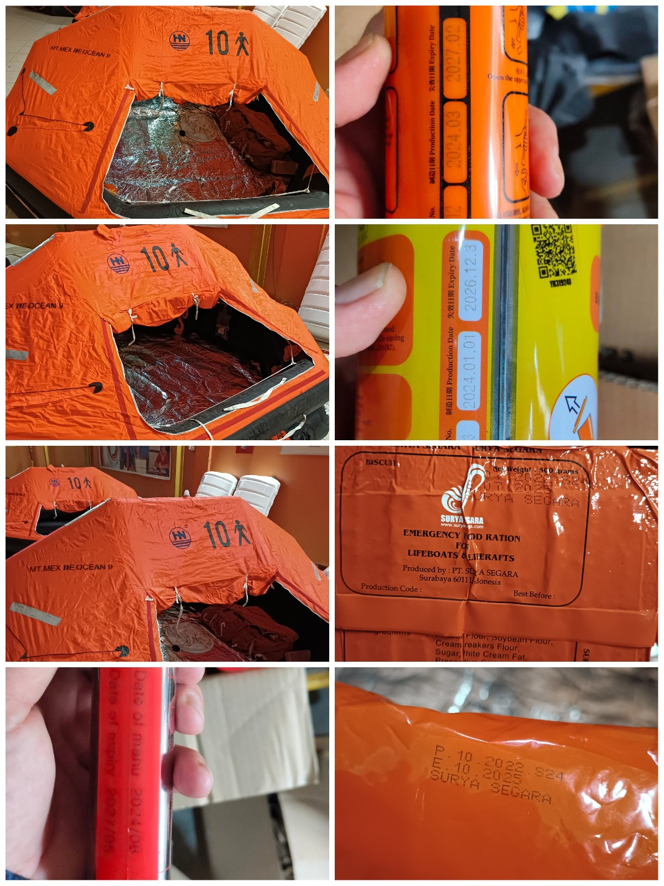
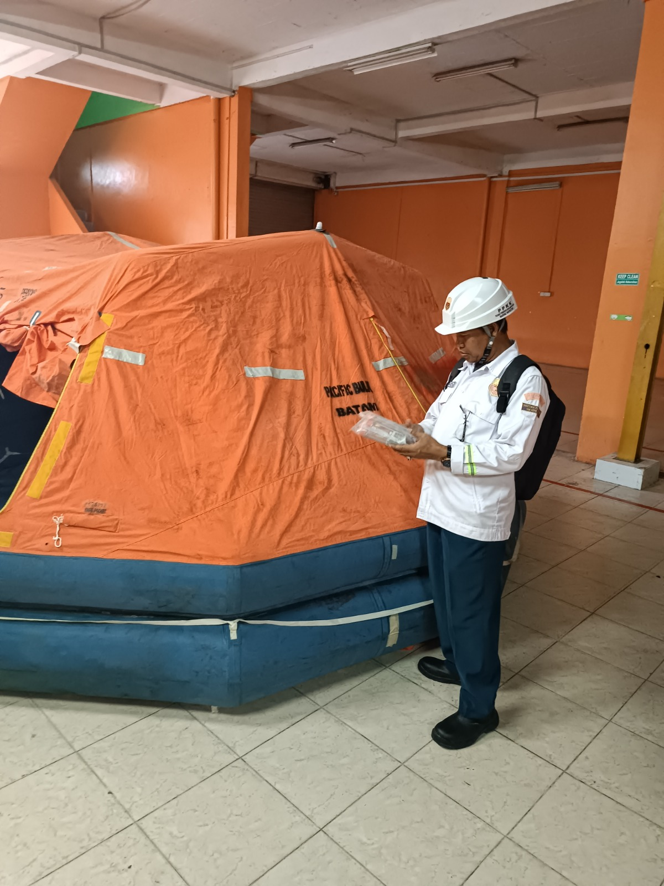
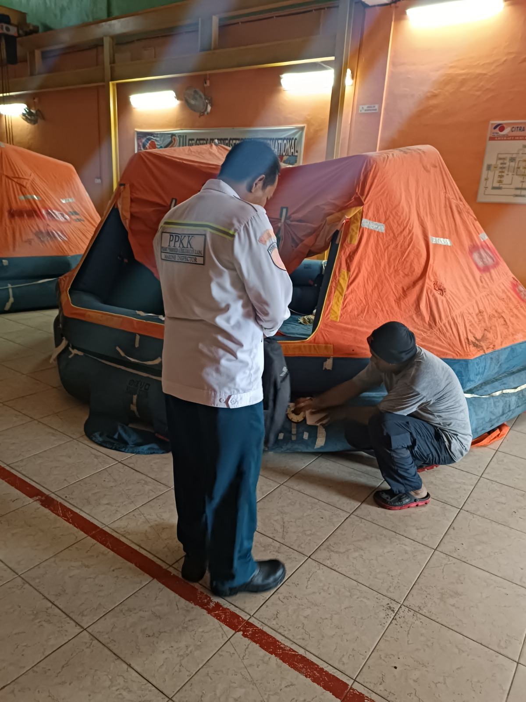
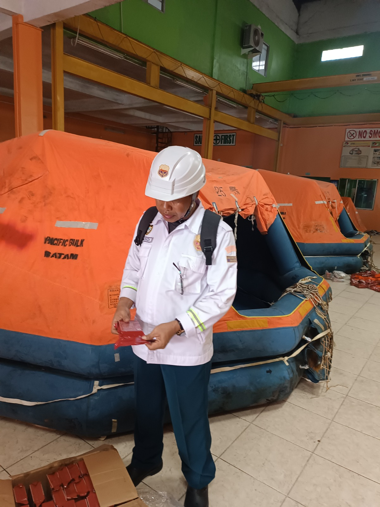
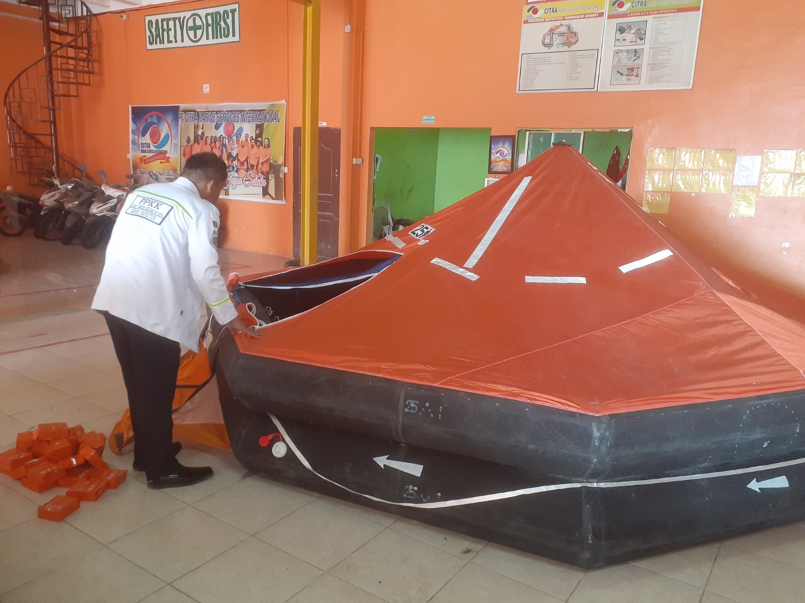

OUR SERVICES
Professional inspection, servicing, repair, and maintenance of liferafts to ensure maritime safety, reliability, and compliance with applicable safety standards.

LIFERAFT SERVICE
Citra Marine Services International provides inspection, servicing and maintenance for inflatable liferafts to support the safety and readiness of lifesaving equipment onboard vessels.
Our servicing process focuses on checking the condition of the liferaft, inflation system, safety equipment and related components according to applicable servicing procedures.
WHAT WE PROVIDE
Inspection and servicing of liferafts to ensure the equipment remains in proper working condition.
Inspection of inflation systems, cylinders and related components according to applicable servicing procedures.
Checking essential safety and survival equipment contained within the liferaft.
Identification of defects and maintenance of liferaft components where required.
Proper repacking and sealing of the liferaft after servicing to maintain its readiness.
Issuance of service certificates based on the inspection and service data of the liferaft and related equipment.
OUR WORK




SAFETY & COMPLIANCE
Liferaft servicing is carried out in accordance with applicable maritime safety requirements, manufacturer servicing procedures and relevant marine safety standards.
Contact Citra Marine Services International for inspection and servicing requirements.
CONTACT US